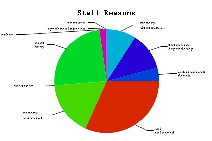
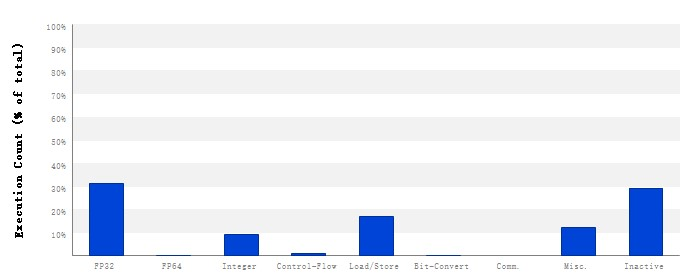
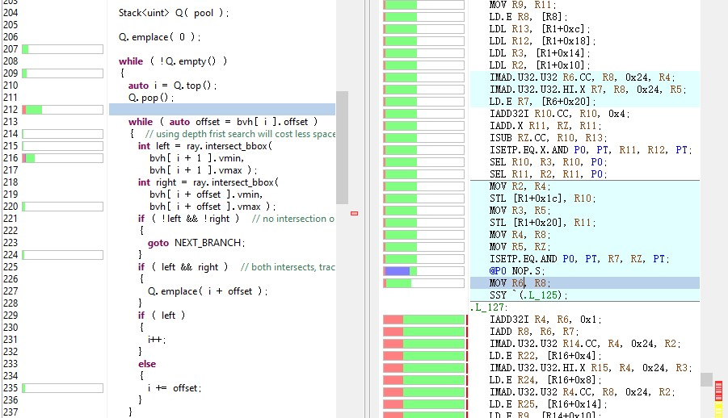
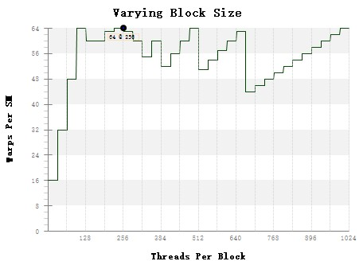

<!DOCTYPE html>
<html>
<head><meta name="generator" content="Hexo 3.8.0">
  <!-- hexo-inject:begin --><!-- hexo-inject:end --><meta charset="utf-8">
  
  <title>quick guide to cuda profiling | 浙江大学超算队</title>
  <meta name="viewport" content="width=device-width, initial-scale=1, maximum-scale=1">
  
  <meta name="keywords" content="TechCUDAProfile">
  
  
  
  
  <meta name="description" content="1. Brief Introduction在并行计算领域，很难通过纯理论的分析来确定程序的性能，GPGPU这种基于特定计算架构的计算任务更甚。事实上，很多制约并行算法性能的瓶颈很可能不在算法本身（比如资源调度障碍）。因此，对给定程序进行充分的性能测试与后续分析是相当必要的调优方法。 Nvidia提供了nvprof，nvvp，Nsight三种cuda可用的性能分析工具，本文将简述配合使用nvprof">
<meta name="keywords" content="Tech,CUDA,Profile">
<meta property="og:type" content="article">
<meta property="og:title" content="Quick Guide to CUDA Profiling">
<meta property="og:url" content="https://zjusct.github.io/2018/12/07/cuprof/index.html">
<meta property="og:site_name" content="浙江大学超算队">
<meta property="og:description" content="1. Brief Introduction在并行计算领域，很难通过纯理论的分析来确定程序的性能，GPGPU这种基于特定计算架构的计算任务更甚。事实上，很多制约并行算法性能的瓶颈很可能不在算法本身（比如资源调度障碍）。因此，对给定程序进行充分的性能测试与后续分析是相当必要的调优方法。 Nvidia提供了nvprof，nvvp，Nsight三种cuda可用的性能分析工具，本文将简述配合使用nvprof">
<meta property="og:locale" content="default">
<meta property="og:image" content="https://zjusct.github.io/2018/12/07/cuprof/a.jpg">
<meta property="og:image" content="https://zjusct.github.io/2018/12/07/cuprof/b.jpg">
<meta property="og:image" content="https://zjusct.github.io/2018/12/07/cuprof/d.jpg">
<meta property="og:image" content="https://zjusct.github.io/2018/12/07/cuprof/c.jpg">
<meta property="og:updated_time" content="2021-02-11T05:46:05.725Z">
<meta name="twitter:card" content="summary">
<meta name="twitter:title" content="Quick Guide to CUDA Profiling">
<meta name="twitter:description" content="1. Brief Introduction在并行计算领域，很难通过纯理论的分析来确定程序的性能，GPGPU这种基于特定计算架构的计算任务更甚。事实上，很多制约并行算法性能的瓶颈很可能不在算法本身（比如资源调度障碍）。因此，对给定程序进行充分的性能测试与后续分析是相当必要的调优方法。 Nvidia提供了nvprof，nvvp，Nsight三种cuda可用的性能分析工具，本文将简述配合使用nvprof">
<meta name="twitter:image" content="https://zjusct.github.io/2018/12/07/cuprof/a.jpg">
  

  

  <link rel="icon" href="/css/images/ZJUSCT_Icon_Black.png">
  <link rel="apple-touch-icon" href="/css/images/ZJUSCT_Icon_Black.png">
  
    <link href="//fonts.googleapis.com/css?family=Source+Code+Pro" rel="stylesheet" type="text/css">
  
  <link href="https://fonts.googleapis.com/css?family=Open+Sans|Montserrat:700" rel="stylesheet" type="text/css">
  <link href="https://fonts.googleapis.com/css?family=Roboto:400,300,300italic,400italic" rel="stylesheet" type="text/css">
  <link href="//cdn.bootcss.com/font-awesome/4.6.3/css/font-awesome.min.css" rel="stylesheet">
  <style type="text/css">
    @font-face{font-family:futura-pt;src:url(https://use.typekit.net/af/9749f0/00000000000000000001008f/27/l?subset_id=2&fvd=n5) format("woff2");font-weight:500;font-style:normal;}
    @font-face{font-family:futura-pt;src:url(https://use.typekit.net/af/90cf9f/000000000000000000010091/27/l?subset_id=2&fvd=n7) format("woff2");font-weight:500;font-style:normal;}
    @font-face{font-family:futura-pt;src:url(https://use.typekit.net/af/8a5494/000000000000000000013365/27/l?subset_id=2&fvd=n4) format("woff2");font-weight:lighter;font-style:normal;}
    @font-face{font-family:futura-pt;src:url(https://use.typekit.net/af/d337d8/000000000000000000010095/27/l?subset_id=2&fvd=i4) format("woff2");font-weight:400;font-style:italic;}</style>
  <link rel="stylesheet" href="../../../../css/style.css">

  <script src="../../../../js/jquery-3.1.1.min.js"></script>
  <script src="../../../../js/bootstrap.js"></script>

  <!-- Bootstrap core CSS -->
  <link rel="stylesheet" href="/css/bootstrap.css">

  
    <link rel="stylesheet" href="../../../../css/dialog.css">
  

  

  
    <link rel="stylesheet" href="/css/header-post.css"><!-- hexo-inject:begin --><!-- hexo-inject:end -->
  

  
  
  

</head>
</html>


  <body data-spy="scroll" data-target="#toc" data-offset="50">


  

  
    <!-- hexo-inject:begin --><!-- hexo-inject:end --><div id="container">
      <div id="wrap">
        
          <header style="height:75px;" class="main_header">

    <div id="allheader" class="navbar navbar-default navbar-static-top" role="navigation">
        <div class="navbar-inner">

          <div class="container" style="height: 75px;">
            <button type="button" class="navbar-toggle" data-toggle="collapse" data-target=".navbar-collapse">
              <span class="sr-only">Toggle navigation</span>
              <span class="icon-bar"></span>
              <span class="icon-bar"></span>
              <span class="icon-bar"></span>
            </button>

            
              <a class="brand" style="
                 margin-top: 0px;" href="#" data-toggle="modal" data-target="#myModal">
                  
              </a>
            

            <div class="navbar-collapse collapse">
              <ul class="hnav navbar-nav">
                
                  <li> <a class="main-nav-link" href="../../../../index.html">Home</a> </li>
                
                  <li> <a class="main-nav-link" href="../../../../archives">Articles</a> </li>
                
                  <li> <a class="main-nav-link" href="../../../../about">About</a> </li>
                
                  <li> <a class="main-nav-link" href="../../../../teamIntro">TeamIntro</a> </li>
                
                  <li> <a class="main-nav-link" href="../../../../contact">JoinUs</a> </li>
                
                  <li><div id="search-form-wrap">

    <form class="search-form">
        <input type="text" class="ins-search-input search-form-input" placeholder>
        <button type="submit" class="search-form-submit"></button>
    </form>
    <div class="ins-search">
    <div class="ins-search-mask"></div>
    <div class="ins-search-container">
        <div class="ins-input-wrapper">
            <input type="text" class="ins-search-input" placeholder="Type something...">
            <span class="ins-close ins-selectable"><i class="fa fa-times-circle"></i></span>
        </div>
        <div class="ins-section-wrapper">
            <div class="ins-section-container"></div>
        </div>
    </div>
</div>
<script>
(function (window) {
    var INSIGHT_CONFIG = {
        TRANSLATION: {
            POSTS: 'Posts',
            PAGES: 'Pages',
            CATEGORIES: 'Categories',
            TAGS: 'Tags',
            UNTITLED: '(Untitled)',
        },
        ROOT_URL: '/',
        CONTENT_URL: '../../../../content.json',
    };
    window.INSIGHT_CONFIG = INSIGHT_CONFIG;
})(window);
</script>
<script src="../../../../js/insight.js"></script>

</div></li>
            </ul></div>
          </div>

      </div>
    </div>

</header>

<div style="height:75px;witdh:100;">


</div>
        

        <div id="content" class="outer">
          
            <section id="main" style="float:none;"><article id="post-cuprof" style="width: 75%; float:left;" class="article article-type-post" itemscope itemprop="blogPost">
    <div id="articleInner" class="article-inner">
        
        
        <header class="article-header">
            
  
    <h1 class="thumb" itemprop="name">
      Quick Guide to CUDA Profiling
    </h1>
  

        </header>
        
        <div class="article-meta">
            
	<a href class="article-date">
	  <time datetime="2018-12-07T15:48:33.000Z" itemprop="datePublished">2018-12-07</time>
	</a>

            
            
	<a class="article-author">
		<span id="postAuthor">
			Author: 小妹妹
		</span>
	</a>

            <div class="article-article-tags-box">
              <ul class="article-tag-list"><li class="article-tag-list-item"><a class="article-tag-list-link" href="../../../../tags/CUDA/">CUDA</a></li><li class="article-tag-list-item"><a class="article-tag-list-link" href="../../../../tags/Profile/">Profile</a></li><li class="article-tag-list-item"><a class="article-tag-list-link" href="../../../../tags/Tech/">Tech</a></li></ul>
            </div>
        </div>
        <div class="article-entry" itemprop="articleBody">
            
            <h2 id="1-Brief-Introduction"><a href="#1-Brief-Introduction" class="headerlink" title="1. Brief Introduction"></a>1. Brief Introduction</h2><p>在并行计算领域，很难通过纯理论的分析来确定程序的性能，<code>GPGPU</code>这种基于特定计算架构的计算任务更甚。事实上，很多制约并行算法性能的瓶颈很可能不在算法本身（比如资源调度障碍）。因此，对给定程序进行充分的性能测试与后续分析是相当必要的调优方法。</p>
<p><code>Nvidia</code>提供了<code>nvprof</code>，<code>nvvp</code>，<code>Nsight</code>三种cuda可用的性能分析工具，本文将简述配合使用<code>nvprof</code>与<code>nvvp</code>的cuda程序性能分析方法。</p>
<a id="more"></a>

<h2 id="2-Check-Out-Device-Properties"><a href="#2-Check-Out-Device-Properties" class="headerlink" title="2. Check Out Device Properties"></a>2. Check Out Device Properties</h2><p>由于cuda程序的线程/块分配方案与程序运行的的硬件高度相关，故对目标平台的硬件参数有一定程度的了解是相当有必要的。我们可以使用<code>cudaGetDeviceProperties()</code>函数获取设备的各项属性，下述代码可以结合<code>cuda_runtime_api.h#1218</code>处<code>struct cudaDeviceProp</code>的定义和各属性的相应注解自行理解。</p>
<figure class="highlight cpp"><table><tr><td class="gutter"><pre><span class="line">1</span><br><span class="line">2</span><br><span class="line">3</span><br><span class="line">4</span><br><span class="line">5</span><br><span class="line">6</span><br><span class="line">7</span><br><span class="line">8</span><br></pre></td><td class="code"><pre><span class="line"><span class="keyword">int</span> nDevices;</span><br><span class="line">cudaDeviceProp prop;</span><br><span class="line">cudaGetDeviceCount( &amp;nDevices );</span><br><span class="line"><span class="keyword">for</span> ( <span class="keyword">auto</span> i = <span class="number">0</span>; i != nDevices; ++i )</span><br><span class="line">&#123;</span><br><span class="line">	cudaGetDeviceProperties( &amp;prop, i );</span><br><span class="line">	<span class="comment">// check out interesting property</span></span><br><span class="line">&#125;</span><br></pre></td></tr></table></figure>

<h2 id="3-Profile-Using-Nvprof"><a href="#3-Profile-Using-Nvprof" class="headerlink" title="3. Profile Using Nvprof"></a>3. Profile Using Nvprof</h2><h3 id="3-1-Quick-Start"><a href="#3-1-Quick-Start" class="headerlink" title="3.1. Quick Start"></a>3.1. Quick Start</h3><figure class="highlight bash"><table><tr><td class="gutter"><pre><span class="line">1</span><br></pre></td><td class="code"><pre><span class="line">nvprof --<span class="built_in">help</span></span><br></pre></td></tr></table></figure>

<h3 id="3-2-Metrics"><a href="#3-2-Metrics" class="headerlink" title="3.2. Metrics"></a>3.2. Metrics</h3><ul>
<li>使用<code>--query-metrics</code>列出所有可测试的性能指标。</li>
<li>使用<code>--metrics sm_efficiency,warp_execution_efficiency,...</code>指定要测试的性能指标。</li>
</ul>
<h3 id="3-3-PC-Sampling"><a href="#3-3-PC-Sampling" class="headerlink" title="3.3. PC Sampling"></a>3.3. PC Sampling</h3><p>在CC5.2或更高的设备上支持使用PC采样(PC sampling)技术。</p>
<p>PC采样技术通过<code>Round-Robin</code>方法对SM中所有活动线程束的PC状态进行采样，采样结果包含如下两种可能：</p>
<ul>
<li>线程束完成了当前指令。</li>
<li>线程束被<code>stall</code>，不能完成当前指令，并可以给出<code>stall</code>的原因。</li>
</ul>
<p>事实上线程束被<code>stall</code>并不代表指令流水线处于<code>stall</code>状态，因为其他正常运行的线程束可以利用计算资源。</p>
<p>CC6.0以上的设备对PC采样方法进行了改进，通过检查线程束调度器是否执行指令来确定指令流水线是否真正处于<code>stall</code>状态，从而能正确指示指令<code>stall</code>的原因。</p>
<h2 id="4-Data-Visualize-Using-Nvvp"><a href="#4-Data-Visualize-Using-Nvvp" class="headerlink" title="4. Data Visualize Using Nvvp"></a>4. Data Visualize Using Nvvp</h2><p><code>nvvp</code>可以导入<code>nvprof</code>的分析结果，可视化显示统计图表，并且建议性地指出程序可能存在的瓶颈。</p>
<p><em>以饼状图显示各类stall比重</em></p>


<p><em>以频谱显示各类指令比例</em></p>


<p><em>通过source file mapping可视化指令stall状态，需要在编译选项中指定<code>-lineinfo</code></em></p>


<h3 id="4-1-Usage"><a href="#4-1-Usage" class="headerlink" title="4.1. Usage"></a>4.1. Usage</h3><figure class="highlight bash"><table><tr><td class="gutter"><pre><span class="line">1</span><br><span class="line">2</span><br></pre></td><td class="code"><pre><span class="line">nvprof -f --kernels <span class="string">"kernelName"</span> --analysis-metrics -o a.nvvp &lt;task&gt; &lt;args&gt;</span><br><span class="line">nvvp a.nvvp</span><br></pre></td></tr></table></figure>

<p>这里我使用的方法是在集群上用<code>nvprof</code>做性能测试，之后将分析结果<code>*.nvvp</code>传回本地用<code>nvvp</code>做可视化。</p>
<h2 id="Ext-Remarks"><a href="#Ext-Remarks" class="headerlink" title="Ext. Remarks"></a>Ext. Remarks</h2><h3 id="Tradeoff-Between-Registers-and-Threads"><a href="#Tradeoff-Between-Registers-and-Threads" class="headerlink" title="Tradeoff Between Registers and Threads"></a>Tradeoff Between Registers and Threads</h3><p>在实际Profiling中重新认识了这个问题。</p>
<p>在默认情况下，<code>nvcc</code>为每个线程分配<code>maxRegsPerThread</code>个数的寄存器，在<em>Tesla K40</em>上，这个值为64。同时，每个SM持有为65536个寄存器，这意味着单个SM中的线程数最多不超过1024。通过检查参数表，我们发现该设备单个SM可容纳线程数为2048。这意味着我们计算任务的GPU利用率最大只有50%（所有SM均满载的状态下）。</p>
<p>在这种情况下，如果我们将分配给单个线程的寄存器数目减半，则最大GPU利用率可以达到100%。但若发生寄存器溢出（register spilling），溢出的存储空间被放到片外的local memory，访问速度在（同在片外的）global memory级别。</p>
<p>在实际的CUDA核函数中，能全部利用64个寄存器的情况很少。寄存器的使用情况可以在nvvp中检查，如果发现有大量寄存器浪费，可以立即减少寄存器数量。在大多数情况下，可以结合计算任务的量级和性质来调节线程最大寄存器数，从而达到有针对性的性能调优。</p>
<p>在<code>nvcc</code>中指定单个线程最大寄存器数，可以添加编译选项<code>-maxrregcount=N</code>。如果限定不修改编译选项或需要逐核函数指定，则需要使用<code>__launch_bounds__</code>限定符，如下（隐式地指定了最大寄存器个数）：</p>
<figure class="highlight cpp"><table><tr><td class="gutter"><pre><span class="line">1</span><br><span class="line">2</span><br><span class="line">3</span><br><span class="line">4</span><br><span class="line">5</span><br><span class="line">6</span><br></pre></td><td class="code"><pre><span class="line">__global__ <span class="keyword">void</span></span><br><span class="line">__launch_bounds__(maxThreadsPerBlock, minBlocksPerMultiprocessor)</span><br><span class="line">MyKernel(...)</span><br><span class="line">&#123;</span><br><span class="line">    ...</span><br><span class="line">&#125;</span><br></pre></td></tr></table></figure>

<p>在我的<code>path tracer</code>中对上述方法进行测试，将每线程的寄存器数减半为32，SM线程数加倍并满载，GPU利用率由30+提升到70+，执行速度有1.5倍左右的提升。</p>
<h3 id="Tradeoff-Between-BlockDim-and-BlockPerSM"><a href="#Tradeoff-Between-BlockDim-and-BlockPerSM" class="headerlink" title="Tradeoff Between BlockDim and BlockPerSM"></a>Tradeoff Between BlockDim and BlockPerSM</h3><p>当一个块（block）中的所有线程束（warp）全部完成时，这个块才可以被SM调度。如果块的大小过大，则块的运行速度受单个线程束约束的开销就越大（如果算法并行度很高，增大块的大小不失为一个好选择）；如果块的大小过小，则一方面SM可能无法达到其最大利用率（受<code>maxBlocksPerSM</code>的限制），另一方面SM调度块的额外开销也会增大。尤其是针对不同特点的计算任务有不同的更优选择，如<code>divergency</code>较高的任务更适合较小的BlockDim。所以在选择BlockDim时不仅要在算法的适应性上做考虑，还要通过多次性能测试来进行针对性的优化。</p>
<h3 id="Beware-of-Ladder-Effects"><a href="#Beware-of-Ladder-Effects" class="headerlink" title="Beware of Ladder Effects"></a>Beware of Ladder Effects</h3><p>注意计算资源分配时要注意分配的资源量要能够被组别整除，否则会出现断层状的资源浪费现象。</p>
<p><em>每块线程数与SM中最大线程束数的关系</em></p>


            
        </div>
        <footer class="article-footer">
            
            
            <h3>评论区</h3>

<script src="//cdn1.lncld.net/static/js/3.0.4/av-min.js"></script>
<script src="//unpkg.com/valine/dist/Valine.min.js"></script>
<!--<script src="//cdn.jsdelivr.net/npm/leancloud-storage@latest/dist/av-min.js"></script>
    <script src='//cdn.jsdelivr.net/npm/valine@latest/dist/Valine.min.js'></script>-->
<div id="vcomments"></div>
<script>
    var notify = 'false' == true ? true : false;
    var verify = 'false' == true ? true : false;
    var visitor = 'true' == true ? true : false;
    new Valine({
        el: '#vcomments',
        notify: notify,
        verify: verify,
        app_id: 'vzkq3TwdOhGcrpi7lsHAoz97-gzGzoHsz',
        app_key: 'St7KQEXXD6TapeMcRL7mjd2d',
        lang: 'en',
        placeholder: 'ヾﾉ≧∀≦)o快来评论一下吧!',
        avatar: 'monsterid',
        pageSize: '10',
        visitor: visitor
    });
</script>


            
            
            
            <div>
    <ul class="post-copyright">
        <li class="post-copyright-author">
            <strong>Post author:  </strong>ZJU · SCT
        </li>
        <li class="post-copyright-link">
            <strong>Post link:  </strong>
            <a href="/2018/12/07/cuprof/" target="_blank" title="Quick Guide to CUDA Profiling">https://zjusct.github.io/2018/12/07/cuprof/</a>
        </li>
        <li class="post-copyright-license">
            <strong>Copyright Notice:  </strong>
            All articles in this blog are licensed under <a rel="license" href="https://creativecommons.org/licenses/by-nc-nd/4.0/" target="_blank" title="Attribution-NonCommercial-NoDerivatives 4.0 International (CC BY-NC-ND 4.0)">CC BY-NC-ND 4.0</a>
            unless stating additionally.
        </li>
    </ul>
    <div>
</div></div>
            

        </footer>
    </div>
    
    
<nav id="article-nav">
  
    <a href="../../23/tensorflow/" id="article-nav-newer" class="article-nav-link-wrap">
      <strong class="article-nav-caption">Newer</strong>
      <div class="article-nav-title">
        
          Distributed Tensorflow
        
      </div>
    </a>
  
  
    <a href="../../../11/25/cuda/" id="article-nav-older" class="article-nav-link-wrap">
      <strong class="article-nav-caption">Older</strong>
      <div class="article-nav-title">CUDA内存管理总结(一)</div>
    </a>
  
</nav>

    
</article>

<!-- Table of Contents -->

<aside id="toc-sidebar">
    <div id="toc" class="toc-article">
        <strong class="toc-title">Contents</strong>
        
        <ol class="nav"><li class="nav-item nav-level-2"><a class="nav-link" href="#1-Brief-Introduction"><span class="nav-number">1.</span> <span class="nav-text">1. Brief Introduction</span></a></li><li class="nav-item nav-level-2"><a class="nav-link" href="#2-Check-Out-Device-Properties"><span class="nav-number">2.</span> <span class="nav-text">2. Check Out Device Properties</span></a></li><li class="nav-item nav-level-2"><a class="nav-link" href="#3-Profile-Using-Nvprof"><span class="nav-number">3.</span> <span class="nav-text">3. Profile Using Nvprof</span></a><ol class="nav-child"><li class="nav-item nav-level-3"><a class="nav-link" href="#3-1-Quick-Start"><span class="nav-number">3.1.</span> <span class="nav-text">3.1. Quick Start</span></a></li><li class="nav-item nav-level-3"><a class="nav-link" href="#3-2-Metrics"><span class="nav-number">3.2.</span> <span class="nav-text">3.2. Metrics</span></a></li><li class="nav-item nav-level-3"><a class="nav-link" href="#3-3-PC-Sampling"><span class="nav-number">3.3.</span> <span class="nav-text">3.3. PC Sampling</span></a></li></ol></li><li class="nav-item nav-level-2"><a class="nav-link" href="#4-Data-Visualize-Using-Nvvp"><span class="nav-number">4.</span> <span class="nav-text">4. Data Visualize Using Nvvp</span></a><ol class="nav-child"><li class="nav-item nav-level-3"><a class="nav-link" href="#4-1-Usage"><span class="nav-number">4.1.</span> <span class="nav-text">4.1. Usage</span></a></li></ol></li><li class="nav-item nav-level-2"><a class="nav-link" href="#Ext-Remarks"><span class="nav-number">5.</span> <span class="nav-text">Ext. Remarks</span></a><ol class="nav-child"><li class="nav-item nav-level-3"><a class="nav-link" href="#Tradeoff-Between-Registers-and-Threads"><span class="nav-number">5.1.</span> <span class="nav-text">Tradeoff Between Registers and Threads</span></a></li><li class="nav-item nav-level-3"><a class="nav-link" href="#Tradeoff-Between-BlockDim-and-BlockPerSM"><span class="nav-number">5.2.</span> <span class="nav-text">Tradeoff Between BlockDim and BlockPerSM</span></a></li><li class="nav-item nav-level-3"><a class="nav-link" href="#Beware-of-Ladder-Effects"><span class="nav-number">5.3.</span> <span class="nav-text">Beware of Ladder Effects</span></a></li></ol></li></ol>
        
    </div>
</aside>

</section>
          
        </div>

        
        <footer id="footer">
  

  <div class="container">
      	<div class="row">
	      <p style="font-size:12px;margin:0;"> Powered by <a href="http://hexo.io/" target="_blank" style="color:#909090">Hexo</a> </p>
	      <p id="copyRightEn" style="font-size:12px;margin:0;">Copyright &copy; 2014 - 2021 浙江大学超算队 All Rights Reserved.</p>

	       
  		   
		</div>
  </div>
</footer>


<!-- min height -->

<script>
    var wrapdiv = document.getElementById("wrap");
    var contentdiv = document.getElementById("content");
    var allheader = document.getElementById("allheader");

    wrapdiv.style.minHeight = document.body.offsetHeight + "px";
    if (allheader != null) {
      contentdiv.style.minHeight = document.body.offsetHeight - allheader.offsetHeight - document.getElementById("footer").offsetHeight + "px";
    } else {
      contentdiv.style.minHeight = document.body.offsetHeight - document.getElementById("footer").offsetHeight + "px";
    }
</script>

      </div>
      <!-- <nav id="mobile-nav">
  
    <a href="../../../../index.html" class="mobile-nav-link">Home</a>
  
    <a href="../../../../archives" class="mobile-nav-link">Articles</a>
  
    <a href="../../../../about" class="mobile-nav-link">About</a>
  
    <a href="../../../../teamIntro" class="mobile-nav-link">Team Intro</a>
  
    <a href="../../../../contact" class="mobile-nav-link">Join Us</a>
  
</nav> -->
      

<!-- mathjax config similar to math.stackexchange -->

<script type="text/x-mathjax-config">
  MathJax.Hub.Config({
    tex2jax: {
      inlineMath: [ ['$','$'], ["\\(","\\)"] ],
      processEscapes: true
    }
  });
</script>

<script type="text/x-mathjax-config">
    MathJax.Hub.Config({
      tex2jax: {
        skipTags: ['script', 'noscript', 'style', 'textarea', 'pre', 'code']
      }
    });
</script>

<script type="text/x-mathjax-config">
    MathJax.Hub.Queue(function() {
        var all = MathJax.Hub.getAllJax(), i;
        for(i=0; i < all.length; i += 1) {
            all[i].SourceElement().parentNode.className += ' has-jax';
        }
    });
</script>

<script type="text/javascript" src="https://cdnjs.cloudflare.com/ajax/libs/mathjax/2.7.1/MathJax.js?config=TeX-AMS-MML_HTMLorMML">
</script>


  <link rel="stylesheet" href="../../../../fancybox/jquery.fancybox.css">
  <script src="../../../../fancybox/jquery.fancybox.pack.js"></script>


<script src="../../../../js/scripts.js"></script>


  <script src="../../../../js/dialog.js"></script>


  


    </div>
  

  <div class="modal fade" id="myModal" tabindex="-1" role="dialog" aria-labelledby="myModalLabel" aria-hidden="true" style="display: none;">
  <div class="modal-dialog">
    <div class="modal-content">
      <div class="modal-header">
        <h2 class="modal-title" id="myModalLabel">ZJUSCT</h2>
      </div>
      <hr style="margin-top:0px; margin-bottom:0px; width:80%; border-top: 3px solid #000;">
      <hr style="margin-top:2px; margin-bottom:0px; width:80%; border-top: 1px solid #000;">


      <div class="modal-body">
      
        <div style="margin:6px;">
        </div>

        <div>
          <a data-toggle="collapse" data-parent="#accordion" href="#collapseThree" aria-expanded="true" aria-controls="collapseThree">&nbsp;&nbsp;&nbsp;&nbsp;&nbsp;&nbsp;About&nbsp;&nbsp;&nbsp;&nbsp;&nbsp;&nbsp;</a>
        </div>

         <div id="collapseThree" class="panel-collapse collapse" role="tabpanel" aria-labelledby="headingThree">
          
          <div class="panel-body">
            浙江大学超算队
          </div>

          <div class="panel-body">
            Copyright © 2021 ZJU · SCT All Rights Reserved.
          </div>

        </div>
      </div>


      <hr style="margin-top:0px; margin-bottom:0px; width:80%; border-top: 1px solid #000;">
      <hr style="margin-top:2px; margin-bottom:0px; width:80%; border-top: 3px solid #000;">
      <div class="modal-footer">
        <button type="button" class="close" data-dismiss="modal" aria-label="Close"><span aria-hidden="true">×</span></button>
      </div>
    </div>
  </div>
</div>

  <a id="rocket" href="#top" class=""></a>
  <script type="text/javascript" src="/js/totop.js?v=1.0.0" async=""></script>
  
    <a id="menu-switch"><i class="fa fa-bars fa-lg"></i></a>
  
<script type="text/x-mathjax-config">
    MathJax.Hub.Config({
        tex2jax: {
            inlineMath: [ ["$","$"], ["\\(","\\)"] ],
            skipTags: ['script', 'noscript', 'style', 'textarea', 'pre', 'code'],
            processEscapes: true
        }
    });
    MathJax.Hub.Queue(function() {
        var all = MathJax.Hub.getAllJax();
        for (var i = 0; i < all.length; ++i)
            all[i].SourceElement().parentNode.className += ' has-jax';
    });
</script>
<script src="http://cdn.mathjax.org/mathjax/latest/MathJax.js?config=TeX-AMS-MML_HTMLorMML"></script><!-- hexo-inject:begin --><!-- Begin: Injected MathJax -->
<script type="text/x-mathjax-config">
  MathJax.Hub.Config({"tex2jax":{"inlineMath":[["$","$"],["\\(","\\)"]],"skipTags":["script","noscript","style","textarea","pre","code"],"processEscapes":true},"TeX":{"equationNumbers":{"autoNumber":"AMS"}}});
</script>

<script type="text/x-mathjax-config">
  MathJax.Hub.Queue(function() {
    var all = MathJax.Hub.getAllJax(), i;
    for(i=0; i < all.length; i += 1) {
      all[i].SourceElement().parentNode.className += ' has-jax';
    }
  });
</script>

<script type="text/javascript" src="https://cdnjs.cloudflare.com/ajax/libs/mathjax/2.7.1/MathJax.js">
</script>
<!-- End: Injected MathJax -->
<!-- hexo-inject:end -->
</body>
</html>
